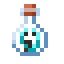

Lifesteal and hearts
Win hearts from kills, lose one for every death, and know how to come back.
The rules
Lifesteal means your health is a resource you can win and lose. You begin with 10 hearts. Every kill adds one to your maximum, every death takes one away, and there is a cap of 30. Your hearts are shown under your name as current and maximum.
These are the current rules. Staff can change them, so ask in the Discord if something looks different in game.
- Starting hearts
- 10
- Maximum hearts
- 30
- Lost per death
- 1 heart
- Gained per kill
- 1 heart
- Lowest you can keep
- 1 heart
Deaths and kills
What a death costs
Every death outside a duel costs you one heart. It does not matter what killed you: another player, a fall, lava, a mob or the void all count the same.
What a kill gives
Killing a player gives you one heart. If you are already on 30, you gain nothing, and the heart drops as a Heart item where the other player died. The same happens whenever a gain would take you over the cap. Anyone can pick it up.
A kill in the overworld also refills your health, and kills move coins and drop the loser's head; see Combat and safe zones.
Elimination
If you die with only 1 heart left, you are out. You are put in spectator mode and cannot leave a 75 block area around spawn. A Soul Bottle drops where you died, and lightning strikes the spot.
Being out is not a ban. You can be revived at any time.
CrabDemon extra lives
Players with the CrabDemon rank survive their final death twice. Each time you come back at 10 hearts with a short burst of protection, and you are told how many extra lives you have left. The count only resets if you are eliminated for real and then revived.
Revives
A Soul Bottle revives one fallen player. The whole server sees "NAME has been brought back to life!" when it works.
Where Soul Bottles come from
- A player drops one when they are eliminated, so whoever finds it can use it.
- The Lifesteal Shop sells them for 100,000 coins.
- The Hunter dealer sells them for 20 XP levels when they are in stock.
They cannot be crafted.
How to use one
- Use the bottleHold it and use it, or open the menu, go to Lifesteal and choose Revive a Player.
- Pick who to bring backChoose Manual entry and type the exact gamertag, or choose Player list to see every fallen player. Players who are online are marked.
- ConfirmOne bottle is used up.
If the player is online they come back straight away. If not, they return the next time they join. They come back at 10 hearts in survival mode, at their spawn point or the world spawn.
Revive from the store
The store sells a revive that brings a player back without a Soul Bottle. It is announced in chat when it is used.
Heart items
A Heart is an item worth one maximum heart. Use it to gain a heart, up to the cap of 30. Hearts stack to 16.
Withdraw
Turn some of your own hearts into items with for one, or for a chosen number. opens a slider, and the Lifesteal menu has Withdraw Hearts. You must keep at least 1 heart. Withdrawn hearts can be given, traded or sold.
Craft
Use a crafting table. Four obsidian and four diamond blocks make one Heart.
| Row | Left | Middle | Right |
|---|---|---|---|
| Top | Obsidian | Diamond block | Obsidian |
| Middle | Diamond block | Empty | Diamond block |
| Bottom | Obsidian | Diamond block | Obsidian |
Buy
The Lifesteal Shop sells Hearts for 50,000 coins each. The Hunter dealer sometimes has a few for 6,000 coins each.
Other sources
Hearts also turn up in crates, from fishing, in goodie bags, in the parkour and in arena loot drops.
Hearty apples
Breaking oak leaves by hand, or with a tool that is not enchanted, has a 0.3% chance to drop a Hearty Apple. Shears do not count.
Eating one gives Health Boost for 5 minutes, one level higher than any Health Boost you already have. These are temporary hearts and do not change your maximum.
Lifesteal shop
Open and pick the Lifesteal Shop tile, talk to the Lifesteal NPC, or open the menu and choose Lifesteal. Pick an item to see its price and how many you already have. Hearts can be bought 1, 4 or 16 at a time; everything else is bought one at a time.
| Item | Price |
|---|---|
| 50,000 coins | |
 Soul Bottle | 100,000 coins |
| Lifesteal book I | 30,000 coins |
| Lifesteal book II | 75,000 coins |
| Lifesteal book III | 150,000 coins |
Lifesteal enchantment
Lifesteal books come in levels I to III and go on swords and axes. Each hit has a 10% chance to heal you, and a higher level heals more.
How to apply one
- Drop the book onto a sword or axe lying on the ground.
- Tap any anvil while holding the book. Applying it to a weapon costs 5 XP levels per book level.
- Combine two equal books at an anvil: 10 XP levels makes a II, 20 makes a III.
You can also get lucky at an enchanting table: enchanting a plain sword, axe or book has a 15% chance to give a Lifesteal enchantment, and level I is by far the most likely.